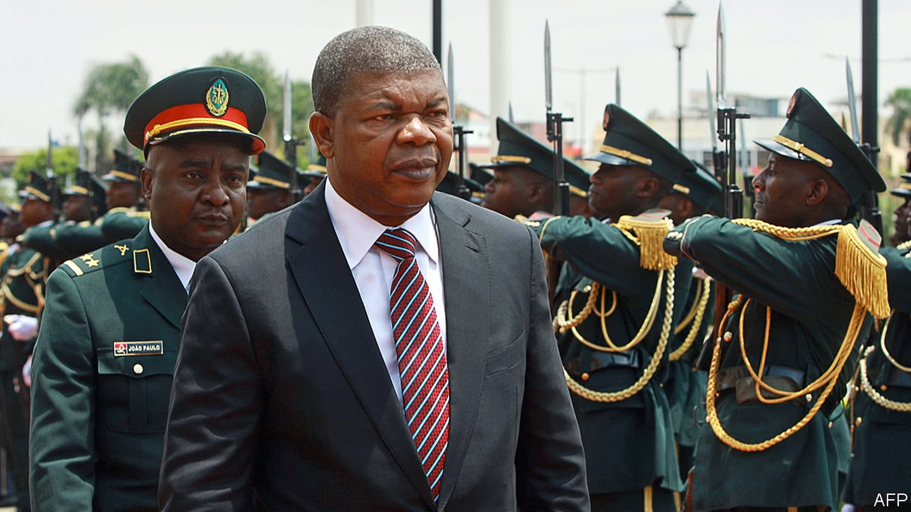
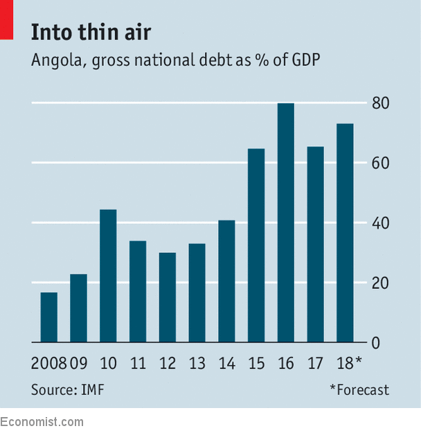
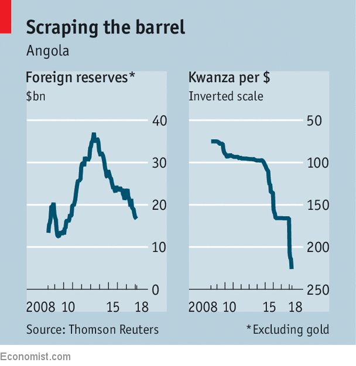

Angola’s new president, João Lourenço, has made an encouraging start
But how far will he go in fighting corruption?

Listen to this story.Enjoy more audio and podcasts on iOS or Android.
Listen to this story
Save time by listening to our audio articles as you multitask
FEW presidents have entered office amid such low public expectations as did João Lourenço, who in September became Angola’s first new president in 38 years. His assumption of power did not involve a change of ruling parties. Rather, he was the handpicked successor of José Eduardo dos Santos, who had run the country since 1979, and whose cronies controlled much of the economy. His daughter, Isabel, ran the national oil company, Sonangol, by far the country’s biggest source of hard currency. His son, José Filomeno, ran the $5bn sovereign wealth fund. Even in retirement, Mr dos Santos kept his role as leader of the ruling party. Everyone assumed that he would wield power behind the scenes.
Yet since being sworn in, the soft-spoken Mr Lourenço has unleashed change that seemed unthinkable a year ago. As well as trying to revive an economy battered by low oil prices (which have rebounded), he has mounted a spirited anti-corruption campaign. He is also steadily prising the fingers of the dos Santos clan from the levers of power.
Both Isabel and José Filomeno have been sacked. José junior faces fraud charges (which he denies) over an alleged attempt to transfer $500m from the fund through an account in London. The former president’s allies are in the cross-hairs, too. Mr Lourenço has fired the chief of staff of the armed forces (who is also under investigation for fraud), as well as the head of foreign intelligence. The ruling party is expected to ditch the senior Mr dos Santos at a congress in September. Newspapers have swung from sycophantic coverage of the former first family to decrying them.
Yet the question many are asking is whether Mr Lourenço, a former defence minister, is sincerely trying to clean up the country or just showing who is in charge. “We don’t know whether he is a real reformist,” says Carlos Rosado de Carvalho of Expansão, a business newspaper. “We don’t know him well enough.”
There are some hopeful signs. Mr Lourenço vows to make Angola less nightmarish for investors. Currently the World Bank rates it a harder place to do business than Syria. Mr Lourenço has unpegged Angola’s currency, the kwanza, from the dollar, prompting it to fall by 27% since January. And he has made the country more enticing to foreign investors by lifting a law that had required them to have local partners who owned about a third of their business. He is also trying to break up state monopolies, which exist mostly to waste petrodollars, and has asked the IMF for advice.
He certainly needs it. Angola’s government is drowning in debt, which is about 65% of GDP (see chart) and rising. Manuel Alves da Rocha, an economist at the Catholic University of Angola, reckons the cost of servicing public borrowing has increased five-and-a-half times since 2014. Opposition parties are calling for an independent audit of the country’s public debt. They want to know how the government squandered so much of the hundreds of billions of dollars it earned from oil and diamonds over the past few decades.

Angolans are used to the powerful growing unfathomably wealthy while the masses forage for scraps. Although the mean income per person is $3,110, twice the sub-Saharan average, about two-thirds of Angolans subsist on less than $2 a day. Child and maternal mortality rates are among the world’s highest, with about one child in five dying before the age of five.
In Cazenga, a shantytown in the capital, residents recently marched down fetid, flooded streets in protest against their living conditions. On Independence Square, demonstrators demanded that public money held abroad be returned to state coffers, decrying Mr Lourenço’s offer of amnesty to those who took it. Such dissent would have been crushed by Mr dos Santos. Still, his apparatus of oppression lingers. Rafael Marques de Morais, who investigates graft, is one of two journalists facing jail for their reporting.

Public anger may affect voting in Angola’s first-ever local elections in 2020. Support for the ruling party, known by its Portuguese acronym MPLA, has slumped from 82% in 2008 to 61% in parliamentary elections last year. (The main alternative is UNITA, formerly a homicidal rebel army.)
At Luanda’s glitzy hotels the talk is of Brazil, where a former president now sits in a cell. “We need a kind of lava jato—several ones,” says Francisco Viana, an MPLA member and head of the Confederation of Angolan Business Associations, referring to a huge investigation into corruption at Brazil’s state-owned oil company that netted numerous politicians. However, Mr dos Santos granted himself immunity from prosecution before stepping down. And after decades of horrific civil war, few want to risk inflaming tensions. Yet Angola is a young country, and memories of the war—as well as patience—are fading fast.